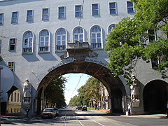

Bevezető
Szeged megyei jogú város, Magyarország harmadik legnépesebb települése, a Dél-Alföld legnagyobb települése, Csongrád-Csanád megye és a Szegedi járás székhelye a Tisza és a Maros találkozásánál.
A terület az újkőkor óta lakott. 1498-ban szabad királyi városi rangot kapott.
Szeged történelmének egyik legmeghatározóbb eseménye az 1879-es árvíz. A szocializmus éveiben könnyű- és élelmiszeripari szerepét erősítették, ma is az ország egyik élelmiszeripari központja. Emellett egyetemi város és fontos kulturális központ is. Szeged rendezvényei, mint például a Szegedi Szabadtéri Játékok , számos látogatót vonzanak évente.
Az 500 éves ferences templom és kolostor, Szeged egyik legrégibb épületegyüttese
A templom gótikus mennyezete, barokk oltára
A szegedi városháza; az 1879-es árvizet túlélt kevés épület egyike
Az árvízi emlékmű
Szent Miklós-plébániatemplom és minorita rendház (Szeged-Felsőváros)

A belváros az újszegedi Tiszapartról
Látnivalók
A Dóm a Dömötör-toronnyal és a Dóm tér kerengője
Kihagyhatatlan látnivaló.
Szecessziós házak
Vagy 50 olyan épületet láthatsz Szegeden, amelyik szecessziós stílusban épült. A leghíresebb a Reök-palota, a Gróf-palota, a Deutsch-palota és az Ungár-Mayer-palota.

Ungár-Mayer-palota
Deutsch-palota
Gróf-palota
Reök-palota
A Palánk és a Szerb templom
Szeged mai belvárosának őse, a "Palánk". A város magját, a vár körüli területet sokáig valóban palánk, vagyis a kihegyezett cölöpökkel megerősített földsánc védte. Egykor piac és számos bolt volt itt. A törökök kiűzése után sok szerb család telepedett le a Palánk területén, itt épült fel a XVIII. század második felében a Szent Miklós szerb ortodox templom. Szeged egyik legrégebbi barokk épülete egyébként túlélte az 1879-es árvizet.
Séta a Tisza partján
Az árvízi emlékműtől a Stefániáig érdemes menni, és megkeresni ezen a szakaszon a kalapos lány szobrát és a tiszavirágokat ábrázoló szoborcsoportot. Közben jó, ha néha megállsz és gyönyöködsz a Tisza-partban.
Stefánia
A Móra Ferenc Múzeum mögött elterülő park, ahol többek közt az egykori vár Mária Terézia kapujának maradványai, Erzsébet királyné carrarai márványból faragott szobra és Dankó Pista cigányprímás szobra áll.
A szegedi szobrok felfedezése
Szegeden számos szobor látható, nem csak a Dóm tér árkádjai alatt, pl. Szent István és Gizella királyné szobra, Vásárhelyi Pál szobra a Széchenyi téren.
Ülő lány, Tisza-parti sétány
Aranycsapat, Somogyi utca belvárosi eleje

Klebelsberg Kuno, Széchenyi tér
Tisza Lajos, Széchenyi tér
Az újszegedi Liget
Átsétálva a Belvárosi hídon, egyenesen az Erzsébet-ligethez lehet jutni.

Újszegedi liget
Egy kis napfürdő a Laposon
A közelében található a Lapos, amely kedvelt fürdőhely.
A Hősök kapuja
Az I. világháborúban elesett 12 ezer szegedi katona emlékére készült, Aba-Novák Vilmos freskói díszítik.

Hősök kapuja
Séta a Kárász utcán a Széchenyi térre
A város legnagyobb tere a Széchenyi tér.
Kultúra
Szeged a dél-alföldi régió kulturális és sportcentrumának számít. A város számos programot kínál az ide látogató turisták és a helyiek számára: Móra Ferenc Múzeum, Szabadtéri Játékok, a Szegedi Nemzeti Színház, melynek zenés színházi produkcióiban közreműködik és szimfonikus koncerteket ad az ország egyik legnagyobb zenekara, a Szegedi Szimfonikus Zenekar, Szegedi Jazz Napok, Muzsikáló Udvar.
Népszerű Szegeden a Somogyi Károly Városi és Megyei Könyvtár, a Szent-Györgyi Albert Agóra, illetve a különböző fesztiválok, kirakodóvásárok.
Különlegességek
Szeged híres a pirospaprikájáról, a jellegzetes papucsáról, a halászléről, a halbicskáról, a szőregi rózsáról. Itt található az ország egyik legjobb egyeteme, a Szegedi Tudományegyetem.
Zárszó
Szeretettel ajánlom minden kedves kirándulónak a csodás napfényes város felkeresését.
Bevezetés
Szeged az újkőkor óta lakott, az első régészeti leletek a neolitikumba nyúlnak vissza, i. e. 6. évezred körülre. Szegedet a rómaiak alapították Partiscum néven, a ma is Szegeden áthaladó vízi és szárazföldi utakon pedig sót, aranyat és fát is szállítottak. Az ásatások arra utalnak, hogy a hun királynak, Attilának volt itt bázisa, a Honfoglalást követően pedig a 10. században a magyarok telepedtek itt le. Az első írásos adat a városról 1183-ból származik, amelyben Szegedet (Ciggedint) a magyar sószállítás központjaként említik. Miután 1241-ben a város leégett az első mongol invázió során, a várost újjáépítették és várral erősítették meg. Szeged a 13. században kereskedelmi központtá nőtte ki magát, elsősorban sótermelése miatt. 1247-ben IV. Béla király a magáénak vallotta a várost, Nagy Lajos király uralkodása idején a régió legjelentősebb városává fejlődött, 1498-ben pedig szabad királyi városi rangot kapott.
Fekvése
Szeged Magyarország déli határához közel fekszik az Alföldön, a Tisza és a Maros folyók találkozásánál. Távolsága Budapesttől 169 km az M5–M43 jelű autópályán. Szegedtől észak felé található a Fehér-tó. Az ország legmélyebben fekvő városa. Sokáig úgy tudták, hogy Szegedtől délre, Tiszaszigeten,[3] a szerb határ közelében található az ország legmélyebben fekvő pontja, 75,8 méter tengerszint feletti magasságon. Újabb GPS mérések szerint az ország legmélyebben fekvő pontja a Tisza jobb partján, a várostól délnyugatra, de még a közigazgatási határon belül, Gyálarét és Röszke települések között található, 75,8 méteres magasságon, és a Tiszaszigeti emlékpont magassága valójában 76,7 méter. A város a Tisza és a Maros folyók összefolyásánál, a Tisza jobb partján, a tiszai ártérből kiemelkedő szigeteken létesült. Az itt élő lakosság fokozatosan feltöltötte a szigetek közötti mélyedéseket, mocsarakat, így a városterület 18–19. század folyamán egységessé vált. A mai Szeged magva tulajdonképpen három sziget: Alszeged, Felszeged és a Vár a Palánkkal. Ezek a mai Alsóváros, Felsőváros és a Belváros.
Éghajlata
A Magyarországon uralkodó kontinentális éghajlat Szeged környékét is uralja, viszont erre a térségre jobban jellemzőek az időjárási szélsőségek. Az éves átlagos hőmérséklet 11,2 °C, a csapadék mennyisége pedig az elmúlt százéves átlag alapján 520 mm. Magyarország területét itt éri a legtöbb napsütés – évi 2050–2100 óra körüli napsütés –, ezért nevezik Szegedet a „napfény városának”.
Népessége
Szeged lakónépessége 2011. január 1-jén 168 048 fő volt, ami Csongrád megye össznépességének 40%-át tette ki. Szeged, Csongrád megye legsűrűbben lakott települése, ebben az évben az egy km²-en lakók száma, átlagosan 598 ember volt. Szeged népesség korösszetétele kedvezőtlen. A 2011-es év elején a 19 évesnél fiatalabbak népességen belüli súlya 20%, a 60 éven felülieké 23% volt. A nemek aránya Szegeden kedvezőtlen, ugyanis ezer férfira 1174 nő jut. 2017-ben a férfiaknál 72,9, a nőknél 79 év volt a születéskor várható átlagos élettartam.[57] A népszámlálás adatai alapján a város lakónépességének 4%-a, mintegy 6710 személy vallotta magát valamely kisebbséghez tartozónak. A kisebbségek közül cigány, német és szerb nemzetiséginek vallották magukat a legtöbben. Szeged Magyarország harmadik legnépesebb városa.
Gazdasága
Hazánk élelmiszeriparának egyik központja. Szegeden és környékén fűszerpaprikát termesztenek és dolgoznak fel. Nemzetközi hírnévre tett szert a szalámigyártás a Pick Szalámigyárnál. Szegeden működik a tejiparral foglalkozó Sole-Mizo Zrt. A környéken (Algyőn) kőolaj- és földgázkitermelés folyik. A rendszerváltás után a város gazdasági szerepe jelentősen visszaesett, sorra szűntek meg nagy múltú üzemei, így például a kábelgyár, a téglagyár, a textilgyár, a kendergyár és a konzervgyár.
Helyi különlegességek
Szeged történelmében is kialakultak jellegzetes, Szegedhez köthető egyedi sajátosságok, amelyek kapcsán megismerte az akkori világ messze földön Szegedet, és a szegedieket, már az újságok, híradások, sőt a televíziózást megelőző századokban is. Legkorábban a sószállítások révén bírt jelentőséggel a város, ami a 14-15. századtól fogva királyi rendelettel vám és adómentességet élvezett.[88] Mátyás király pedig országos vásár megrendezésére adott engedélyt a város számára, amely az akkori kereskedelem egyik fő központjává tette Szegedet.[89] Mindezek miatt a város jelentősége folyamatosan növekedett az évszázadok során. Eleinte lóvásárai, majd a halbő Tisza folyó révén a halkereskedelme is nevezetessé tette a várost. Idővel élénk szárított hal, dohány és gabonakereskedelme révén vált messzi vidékek kereskedői számára áhított piaci hellyé. Ipari fejlődését jól mutatja, hogy 1870-ben az összeírások idején 4767 iparos működött a városban. Halászok, malomiparosok, faragók, hajókészítők, fűrészelő- és zsindelyvágó iparosok, talicskakészítők, szappanfőzők, cserépégetők… stb. Egyes iparágak mesterei révén néhány termék igazi szegedi különlegességnek számított. A mai korban már ezek a hagyományok kezdenek elhalványulni, holott sokáig ezek révén volt ismert az utolsó száz esztendőben Szeged.